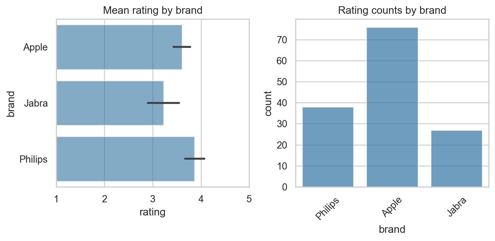
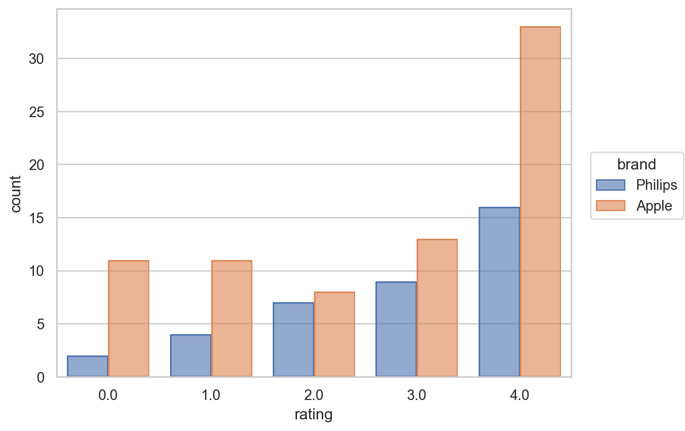
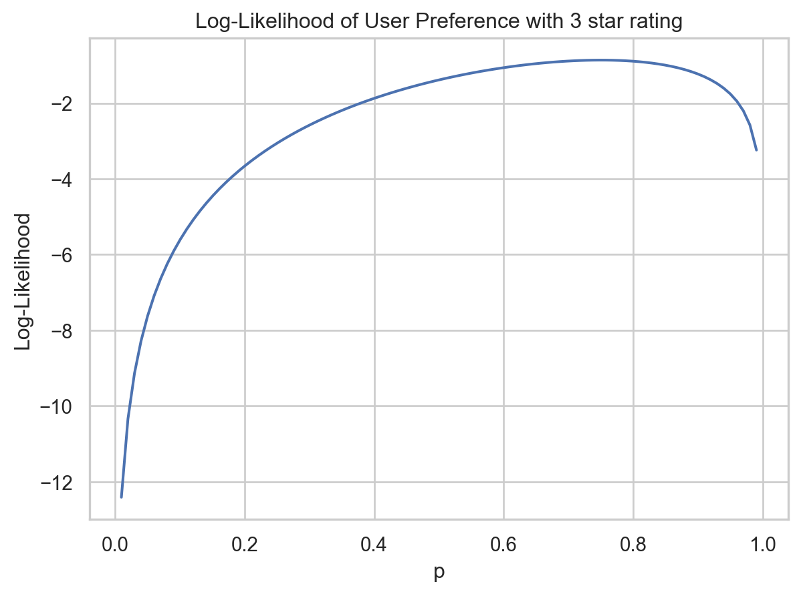
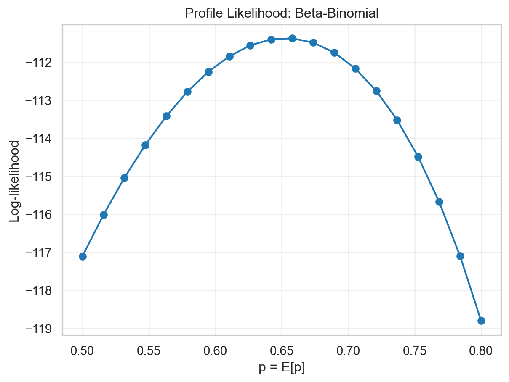
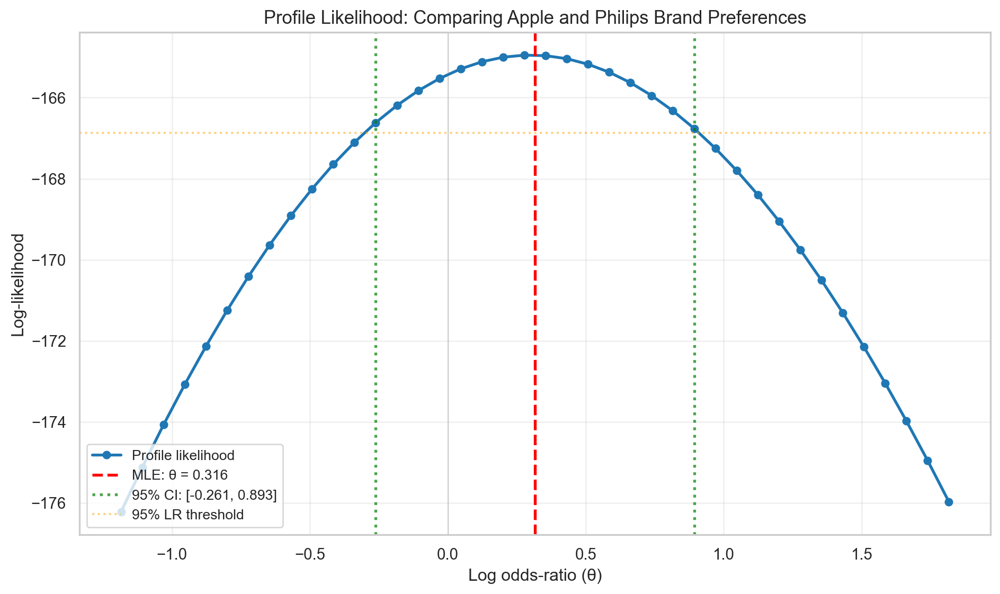

| item_id | user_id | rating | timestamp | model_attr | category | brand | year | |
|---|---|---|---|---|---|---|---|---|
| 3396 | 4501 | 443035 | 4.0 | 2015-04-10 | Female | Headphones | Apple | 2014 |
| 1764 | 3700 | 209184 | 4.0 | 2014-01-10 | Male | Headphones | Philips | 2014 |
| 2521 | 4501 | 312774 | 1.0 | 2014-09-28 | Female | Headphones | Apple | 2014 |
| 3105 | 4501 | 394621 | 4.0 | 2015-02-04 | Female | Headphones | Apple | 2014 |
| 2063 | 3700 | 252433 | 3.0 | 2014-05-13 | Male | Headphones | Philips | 2014 |
Introduction
Product ratings are commonly used to assess brand preference, but summarizing and comparing ratings is challenging because user ratings reflect variability and randomness in individual user preferences. Some users are naturally generous raters while others are harsh. Traditional summary statistics like mean ratings ignore this heterogeneity which can lead to misleading conclusions.
Using electronics product rating dataset, this article first explores a simple bootstrap based rating comparison. The limitation of such a model are highlighted.
As an introduction to the proposed hierarchical model a beta-binomial model (Pawitan 2013) for a single brand is presented, that explicitly captures how individual user preferences vary, enabling estimation of the underlying distribution of rating propensity for a given brand.
Building on it, a richer model that capture variability in preferences for 2 brands simultaneously is developed. A reparameterisation using the log of odds-ratio enables direct modeling of the parameter of interest which is a comparative measure of favourability between the 2 brands. Throughout the study, the parameter choices are governed by considering likelihood profile and the values that maximise it.
Data
Electronics product rating dataset is used in the study. The dataset contains user ratings for various electronic products, with each rating on a scale from 1-5 (converted to 0-4). For this article a subset of Headphones in the data, from brands Philips and Apple is used. The study focuses on 1 particular product from each of these brands to make a comparative assessment.
EDA
Average ratings for brands is close and it appears that there is some degree of variability in the ratings. This variability can hide true differences between brands.
There is visible overlap of standard errors and so at this point it is hard to say which brand is more favorably rated given the variability.

The distribution of ratings for these brands has distinct patterns, while users seem to have more even views on Apple (commonly rate 0 to 3), Philips has a more favourable set of ratings with fewer 0 Stars proportionally.

Analysis
Baseline approach
To establish a sensible baseline for comparing ratings, a simulation can be set up such that sampling ratings for each brand and then comparing differences in their mean gives us an intuitive and meaningful picture about what to expect in data.

Bootstrap Test Results:
Observed difference (Philips - Apple): 0.2632
Two-tailed p-value: 0.5419
Significant at α=0.05: No
Probability Ratio:
Mean rating ratio (Philips/Apple): 1.1010It is clear that due to the variability in ratings data, the means do tend to be statistically similar. There isn’t a strong evidence supporting Philips being different from Apple.
The bootstrap results are also indicative of what would be observed if a ratings ~ brands regression was performed. The p-values should also be practically same.
Modelling a single brand
To build intuition about the underlying distribution of ratings, it can be useful to start by modeling the ratings for a single brand.
Each user rating x∈{0,…,4} is treated as if it were a binomial count for convenience and user-level probabilities \({p_i}\) are modelled with a Beta prior. This is a working approximation that gives useful shrinkage and interpretable parameters, not a claim that ratings are literally counts of 5 binary trials. This assumption implies that brand ratings are essentially a mixture of binomials (Pawitan 2013)
A binomial model assumes \(y \sim \text{Binomial}(n, p)\), where \(p\) is the probability of a favourable rating. The likelihood is \(L(p) = p^y(1-p)^{n-y}\), with MLE \(\hat{p} = y/n\) (George Casella 2002)
Extending this line of thinking it is clear that the underlying binomial parameter (p) is the favourability of the given brand for users. Higher the p, more favourable the brand and expected it should have higher ratings.
So, effectively each user has a preference p and the observed ratings are realizations of a binomial process with this underlying probability.
To model a single user’s preference needs a hierarchical approach, where individual user preferences are drawn from a common distribution, capturing the variability across users. The end result is not just a single value of p for a user but rather a range of possible values with different likelihood based on how the user has rated the product.
For e.g. if a user who has rated the product 3 star is considered, then the likelihood of their preference p would be greater (around 0.65 value), but it may still be possible that their preference is some other value with a lower likelihood.
For a refresher on likelihood theory refer likelihood primer

Heirarchical model
It is not unreasonable to assume that these preferences (p) for users are drawn from a distribution (say Beta). The marginal likelihood for a given user integrates over the uncertainty in \(p\):
\[L(y) = \int_0^1 L(y \mid p) \, f(p) \, dp = \int_0^1 p^y(1-p)^{n-y} f(p) \, dp\]
where \(f(p) = \text{Beta}(p \mid \alpha, \beta)\). This captures heterogeneity in user preferences while pooling information across observations (Pawitan 2013).
A numerical approach is favoured here so that \(\alpha\) and \(\beta\) can be estimated from the data (Virtanen et al. 2020).
Computing the Beta-Binomial PMF
The beta-binomial PMF can be computed via numerical integration or via a closed-form expression. For completeness, we show both approaches:
Numerical Integration Approach (Educational):
The marginal likelihood can be computed by numerically integrating over the uncertainty in \(p\):
\[P(X=k) = \int_0^1 \text{Binomial}(k; n, p) \times \text{Beta}(p; \alpha, \beta) \, dp\]
While numerically correct, this integration-based approach is slow since it requires evaluating the integral for each parameter value during optimization.
Closed-Form Approach (Used for Analysis):
The beta-binomial distribution has a closed-form expression:
\[P(X=k) = \binom{n}{k} \frac{B(k + \alpha, n - k + \beta)}{B(\alpha, \beta)}\]
where \(B\) denotes the beta function. This can be computed efficiently using log-space arithmetic:
The closed-form approach is orders of magnitude faster and numerically stable, making it ideal for likelihood optimization.
Maximum Likelihood Estimation
Beta-Binomial MLE:
α = 0.668900
β = 0.355349
Distribution of p ~ Beta(0.67, 0.36):
E[p] = 0.653064
SD[p] = 0.334557
95% range: [-0.002668, 1.308796]
Interpretation: Users have a preference for Apple products with p varying around 65.3%
with standard deviation ±33.5%Goodness of fit
Goodness of fit can be assessed by comparing counts from the Beta-binomial model using MLE estimates, to actual counts at different rating values. The counts are close and model is satisfactory for this data.
Model check:
Rating Observed counts Modelled counts
0 0 11 11.5
1 1 11 9.1
2 2 8 9.7
3 3 13 12.8
4 4 33 32.9Profile likelihood of p
For Beta-Binomial, we fix E[p] and optimize α.
Profile likelihood MLE: p = 0.657895
Joint optimization MLE: p = 0.653064
Difference: 0.004831
The curve shows a well defined (regular) likelihood profile which peaks at around MLE value. It could also be used to derive confidence interval on p using likelihood based intervals if required.
Comparing Apple and Philips
The formulation earlier can be extended to compare the ratings distributions of Apple and Philips by fitting separate Beta-Binomial models for each brand and then comparing the estimated parameters and profile likelihoods. However, a reparameterisation of joint likelihood of both brands can enable estimation of difference in preferences between the two brands directly and efficiently.
To illustrate this consider only 2 binomial datasets first and their joint likelihood.
Joint Likelihood of Two Binomial Datasets:
Let \(y_1 \sim \text{Binomial}(n_1, p_1)\) and \(y_2 \sim \text{Binomial}(n_2, p_2)\) be the observed counts (favourable ratings) from two brands. The joint likelihood is:
\[L(p_1, p_2 \mid y_1, y_2) = p_1^{y_1}(1-p_1)^{n_1-y_1} \cdot p_2^{y_2}(1-p_2)^{n_2-y_2}\]
Pawitan’s Reparameterisation for Comparing Proportions:
Pawitan advocates reparameterising in terms of the log odds-ratio \(\theta\) (parameter of interest) and log odds \(\eta\) (nuisance parameter). This reparameterisation is preferred because the likelihood of the log odds-ratio is more regular than alternatives (difference or relative risk), particularly in small samples.
Define: - Log odds-ratio: \(\theta = \log\left(\frac{p_1(1-p_2)}{p_2(1-p_1)}\right)\) (compares relative odds between brands) - Log odds: \(\eta = \log\left(\frac{p_2}{1-p_2}\right)\) (nuisance parameter)
The null hypothesis of equal proportions is expressed as \(H_0: \theta = 0\) (equivalent to \(p_1 = p_2\)).
By simple algebra, the probabilities can be expressed in terms of \((\theta, \eta)\) as:
\[\eta = \log\frac{p_2}{1-p_2}\]
\[p_2 = \frac{e^{\eta}}{1+e^{\eta}}, \quad p_1 = \frac{e^{\theta+\eta}}{1+e^{\theta+\eta}}\]
The joint likelihood in terms of \((\theta, \eta)\) becomes:
\[L(\theta, \eta) = \left(\frac{p_1/(1-p_1)}{p_2/(1-p_2)}\right)^{y_1} \left(\frac{p_2}{1-p_2}\right)^{y_1+y_2} (1-p_1)^{n_1-y_1}(1-p_2)^{n_2-y_2}\]
\[= e^{\theta y_1} e^{\eta(y_1+y_2)}(1+e^{\theta+\eta})^{-(n_1-y_1)}(1+e^{\eta})^{-(n_2-y_2)}\]
The profile likelihood of \(\theta\) is obtained by maximizing the joint likelihood over the nuisance parameter \(\eta\):
\[L_p(\theta) = \max_{\eta} L(\theta, \eta \mid y_1, y_2)\]
This orthogonal parameterisation allows efficient inference on \(\theta\) independently of the nuisance parameter. Confidence intervals for \(\theta\) are constructed using the likelihood ratio test: values satisfying \(-2\log\Lambda(\theta) \leq \chi^2_{1,\alpha}\) form a likelihood-based confidence region (Pawitan 2013).
Hierarchical Extension: Comparing Two Brands with Heterogeneity
The reparameterisation can be extended to account for heterogeneity in user preferences within each brand. Assume that for each brand, the underlying probability varies according to a beta distribution:
- Apple: \(p_1 \sim \text{Beta}(\alpha_1, \beta_1)\)
- Philips: \(p_2 \sim \text{Beta}(\alpha_2, \beta_2)\)
Using Pawitan’s reparameterisation in terms of \((\theta, \eta)\), the marginal likelihood (integrating over the heterogeneity in both brands) is:
\[L(\theta, \eta, \alpha_1, \beta_1, \alpha_2, \beta_2 \mid y_1, y_2) = \int_0^1 \int_0^1 L(\theta, \eta \mid p_1, p_2, y_1, y_2) \cdot f(p_1 \mid \alpha_1, \beta_1) \cdot f(p_2 \mid \alpha_2, \beta_2) \, dp_1 \, dp_2\]
where \(f(p_i \mid \alpha_i, \beta_i)\) denotes the beta probability density function for brand \(i\). This integral captures how user preferences vary within each brand while simultaneously allowing comparison of the preference distributions between brands through the log odds-ratio parameter \(\theta\).
Profile Likelihood for Comparing Brands
Following the same structure as the single-brand analysis, we compute the profile likelihood of \(\theta\) by fixing it and optimizing over the nuisance parameters.
Computing profile likelihood...
5/20 complete
10/20 complete
15/20 complete
20/20 complete
MLE: θ = 0.315789
95% Likelihood-based Confidence Interval for θ:
[-0.261, 0.893]
Excludes zero: False
Profile Likelihood Summary:
MLE: θ = 0.316
95% CI: [-0.261, 0.893]
CI excludes zero: FalseInterpretation
The profile likelihood shows the log odds-ratio between Apple and Philips preferences.
Point Estimate: The maximum likelihood estimate indicates the direction and magnitude of preference difference between the two brands.
Confidence Interval & Significance: The 95% likelihood-based confidence interval’s relationship to zero (whether it excludes or includes zero) determines statistical significance at the 0.05 level. Excluding zero indicates strong evidence of a true difference; including zero suggests weak evidence.
Key Insight: A log odds-ratio of θ = 0 indicates equal preference distributions between brands. The reparameterization naturally handles within-brand heterogeneity in user preferences while directly modeling the comparative parameter of interest, making inference on brand differences straightforward and interpretable.
Cross-method Consistency
Consistency Check: Data vs. Profile Likelihood
Data:
Probability ratio (Philips/Apple): 1.1010
Profile likelihood approach:
Log odds-ratio (θ): 0.3158
Implied odds-ratio: 1.3713
Implied probability ratio (approx): 1.1710
Difference: 0.0700
✓ Both methods are consistent in indicating Philips is ~10.1% higherConclusion
This analysis demonstrates complementary approaches to comparing brand preferences from rating data:
Bootstrap testing provides a non-parametric baseline showing no significant difference between Apple and Philips mean ratings at conventional significance levels.
Hierarchical beta-binomial modeling captures user preference heterogeneity while pooling information, yielding principled estimates of rating propensity distributions for each brand. The closed-form PMF computation enables efficient likelihood optimization, making the approach practical for larger datasets.
The findings are consistent across methods: observed differences in mean ratings are not statistically significant. However, the hierarchical likelihood approach provides richer characterization of user preference distributions, formal uncertainty quantification, and a flexible foundation for extensions (temporal dynamics, hierarchical structures across products/categories, or discrete choice modeling).
References
George Casella, Roger L. Berger. 2002. Statistical Inference, Second Edition. Cengage.
Pawitan, Yudi. 2013. In All Likelihood: Statistical Modelling and Inference Using Likelihood. Oxford University Press.
Virtanen, Pauli, Ralf Gommers, Travis E. Oliphant, Matt Haberland, Tyler Reddy, David Cournapeau, Evgeni Burovski, et al. 2020. “SciPy 1.0: Fundamental Algorithms for Scientific Computing in Python.” Nature Methods 17: 261–72. https://doi.org/10.1038/s41592-019-0686-2.